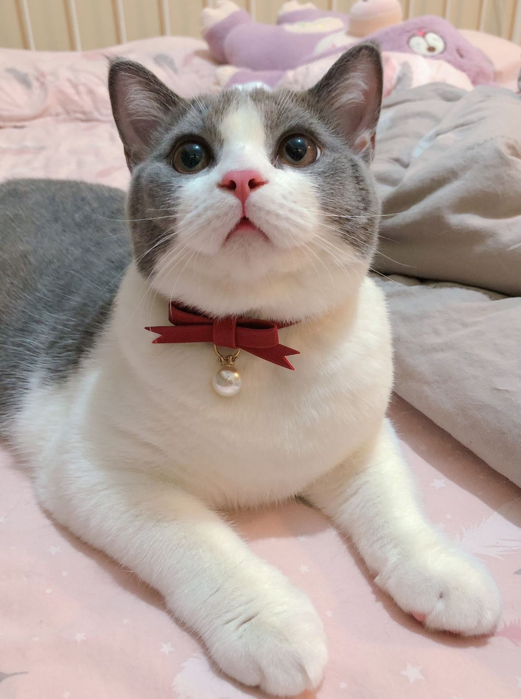
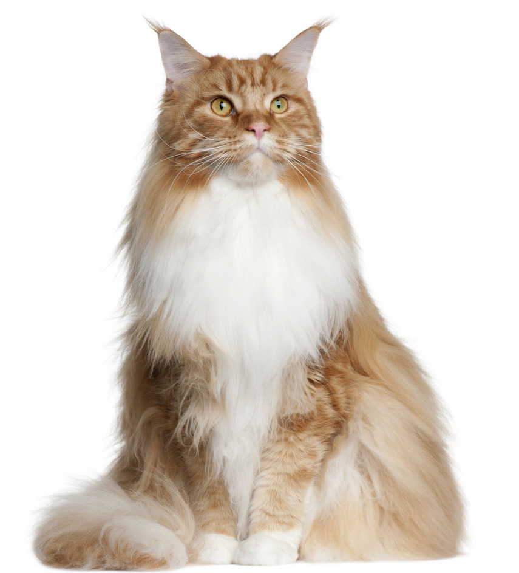

毛短，整齐光滑，肌理细腻，骨骼健壮，动作敏捷，具有野生的特征，日常护理比较容易，懂人语，温顺近人，作为伴侣动物，特别招人喜爱。 短毛猫品种较多几乎分布于全球世界各地，主要品种如下: 英国短毛猫、美国短毛猫、欧洲短毛猫、东方短毛猫、暹罗猫、卷毛猫(四个品种)、缅甸猫(分美洲缅甸猫和欧洲缅甸猫)、哈瓦那猫、新加坡猫、曼岛猫(马恩岛猫)、埃及猫、孟加拉猫、苏格兰折耳猫、美国卷耳猫、加州闪亮猫、加拿大无毛猫(斯芬克斯猫)、日本短尾猫、呵叻猫、阿比西尼亚猫、孟买猫、俄罗斯蓝猫、亚洲猫组(含波米拉猫)。

毛长5~10cm，柔软光滑，视季节不同而稍有变化。身材优美，动作稳健;性格温顺，依赖性强，喜欢与人亲近;叫声柔和，在主人面前喜欢撒娇。虽然皮毛需要天天梳理，初夏会掉很多毛。日常护理稍显费事，但作为伴侣动物，也是倍受人们喜爱。 长毛猫主要品种如下: 波斯猫(英国称longhair)、金吉拉猫、喜马拉雅猫、(一般来说，金吉拉猫和喜马拉雅猫算波斯猫的一种)缅因猫、伯曼猫、安哥拉猫、土耳其梵猫、挪威森林猫、西伯利亚森林猫、布偶猫、索马里猫
